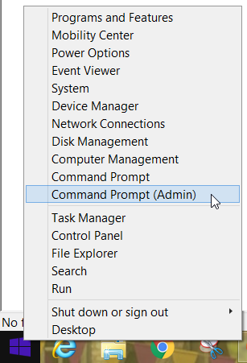
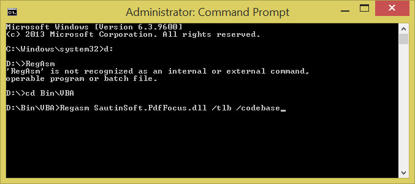
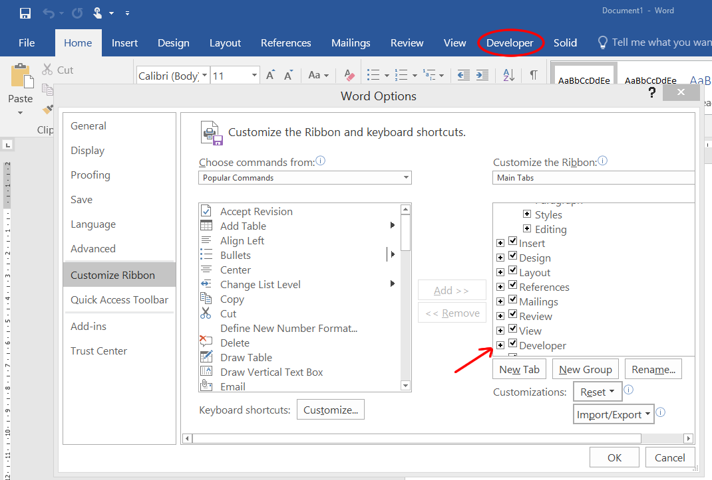
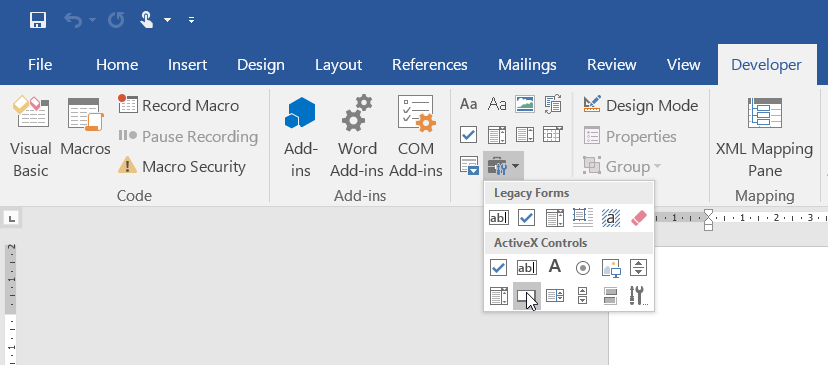
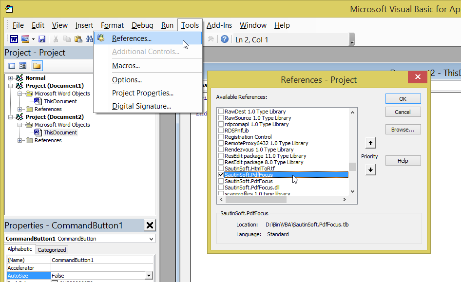
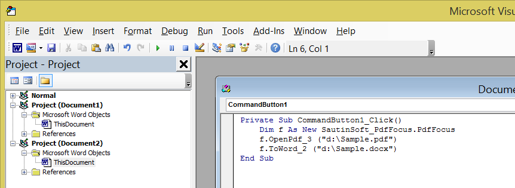

PDF Focus .Net is .Net assembly but it's compiled with ComVisible attribute, therefore you may use it easily as COM component.
Here we'll show the steps how to use PDF Focus .Net in VBA:
To make steps at once:
1. Execute "install.bat" as Administrator.
Or:
1. Right click by "Start" button and run Command prompt (Admin):

2. Add the Assembly to the Registry, launch:
Regasm.exe "A Drive:\A Path\SautinSoft.PdfFocus.dll" /tlb /codebase

Well done! Now we've registered SautinSoft.PdfFocus library. Now you may use the component in VBA, PHP.
RegAsm.exe - Assembly Registration Tool: http://msdn.microsoft.com/en-us/library/tzat5yw6%28v=vs.71%29.aspx.
We've placed the "RegAsm.exe" inside the "Code samples\VBA" for your convenience.
If you have any questions, ask us online at: http://www.sautinsoft.com or email: support@sautinsoft.com
1. Please be sure, that you have registered SautinSoft.PdfFocus.dll for COM Interop as shown above at this page.
2. Launch MS Word and create a "Blank document".
3. Follow to the "Developer" tab. If you don't see "Developer" at your Ribbon, add it as shown:
File->Options->Customize Ribbon ... Check "Developer".

4. Insert a new button and double click by it:

5. After double-clicking by the button you will appear in "Microsoft Visual Basic for Application" area.
Add reference to the SautinSoft.PdfFocus:
Tools->References... (Find and select SautinSoft.PdfFocus and click "OK"):

6. The last step, add VBA code to convert PDF to Word:
Dim f As New SautinSoft_PdfFocus.PdfFocus
f.OpenPdf_3 ("d:\Sample.pdf")
f.ToWord_2 ("d:\Sample.docx")

Well Done! Now you can convert your PDF file to All formats in VBA!